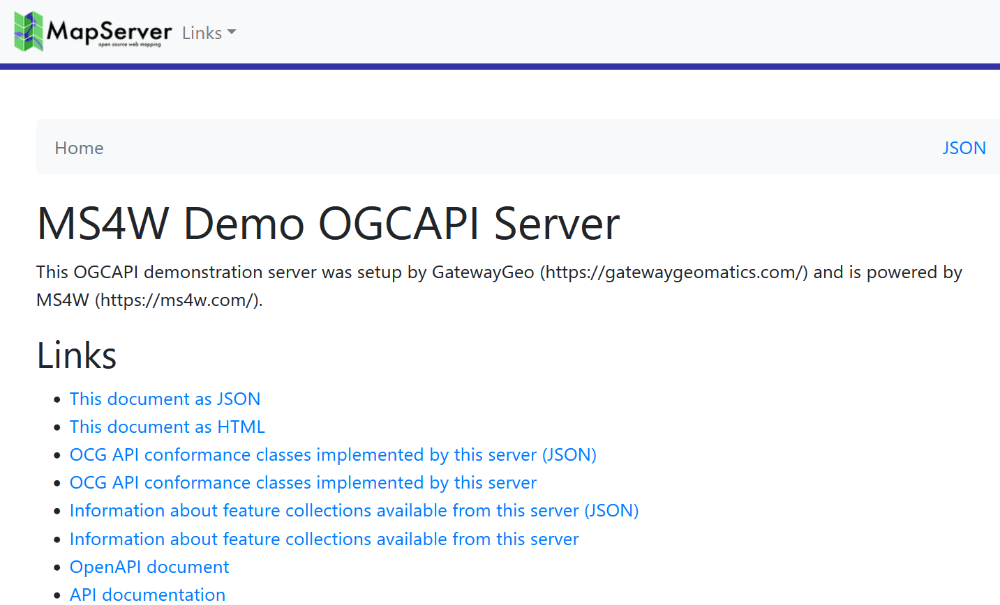
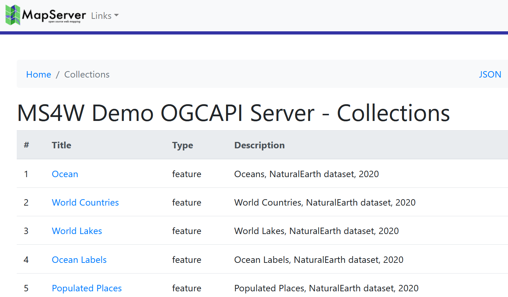
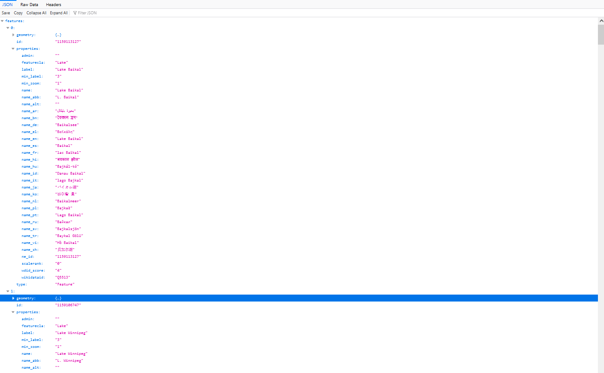
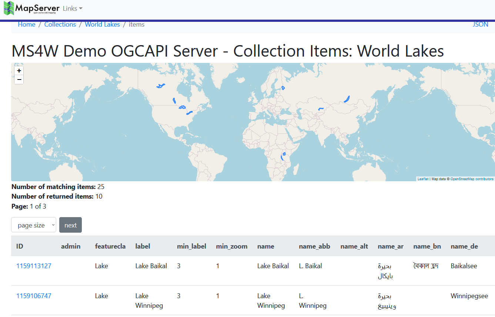
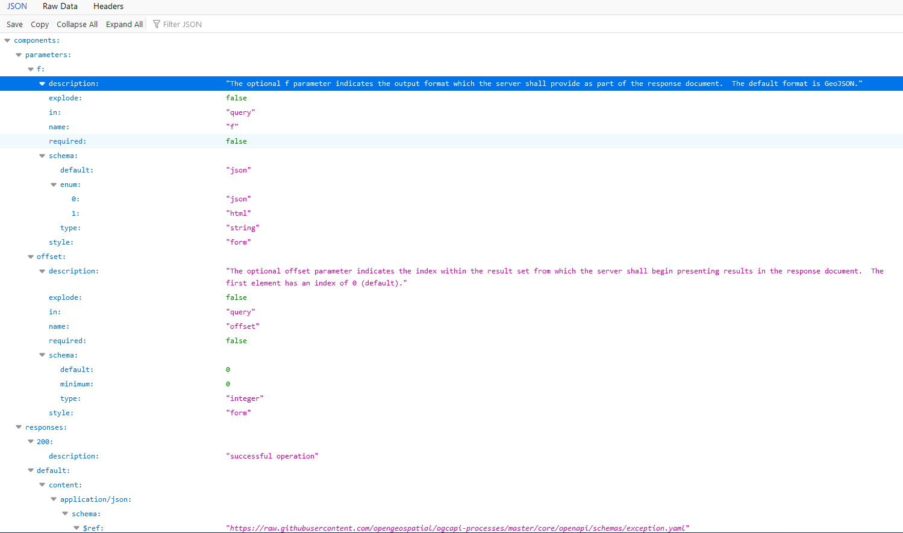
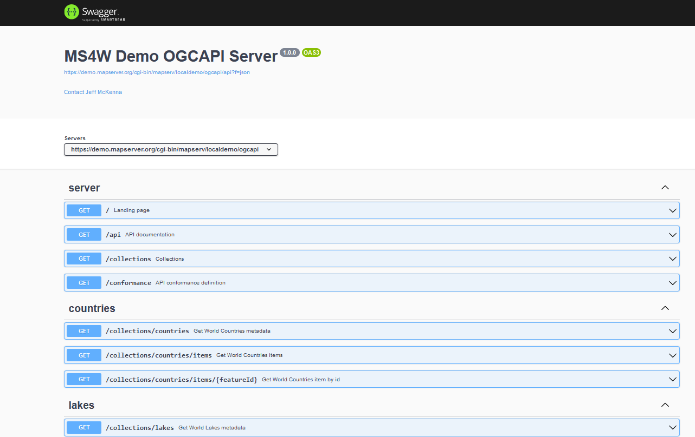

OGC API : Features¶
- Author:
Jeff McKenna
- Contact:
jmckenna at gatewaygeomatics.com
- Last Updated:
2022-09-12
Background¶
OGC is undergoing a revolutionary effort around modernizing their API specifications to align with current technology and design patterns:
REST
JSON
OpenAPI (and Swagger)
The OGC API efforts represent a clean break from the first generation WxS specifications. This document is an attempt to describe MapServer support for (initially) the OGC API - Features server specifications. The modular nature of OGC API will allow for reuse of shared functionality (landing pages, conformance, collections, queryables, filtering, etc.) across various OGC APIs implemented in MapServer.
OGC API request/response design patterns consist of HTTP operations with GET (KVP) or POST (JSON) methods to specific query parameters. HTTP methods beyond GET/POST (PUT, DELETE, etc.) are envisioned as optional extensions for transactional capability.
Below are mappings between WxS specifications implemented in the MapServer suite and the relevant emerging OGC API standards.
WxS |
OGC API |
|---|---|
OWS Common |
OGC API - Common |
WMS |
OGC API - Maps |
WMTS |
OGC API - Tiles |
WFS |
OGC API - Features |
WCS |
OGC API - Coverages |
SLD |
OGC API - Styles |
Requirements¶
MapServer 8.0 or more recent (compiled with the CMake WITH_OGCAPI switch enabled) is required to implement OGC API.
This document assumes that you are already familiar with certain aspects of MapServer:
MapServer application development and setting up .map files.
Familiarity with the OGCAPI: Features spec would be an asset.
Setting Up an OGC API Server Using MapServer¶
Install the Required Software¶
OGC API requests are handled by the mapserv CGI program. The first step is to check that your mapserv executable includes OGC API support. One way to verify this is to use the “-v” command-line switch and look for “SUPPORTS=OGCAPI_SERVER”.
(Unix users should refer to the Compiling on Unix document for any compiling instructions, and Windows users might want to use MS4W, which comes ready with OGC API support)
Example 1. On Unix:
$ ./mapserv -v
MapServer version 8.1-dev OUTPUT=PNG OUTPUT=JPEG OUTPUT=KML SUPPORTS=PROJ
SUPPORTS=AGG SUPPORTS=FREETYPE SUPPORTS=CAIRO SUPPORTS=SVG_SYMBOLS SUPPORTS=RSVG
SUPPORTS=ICONV SUPPORTS=FRIBIDI SUPPORTS=WMS_SERVER SUPPORTS=WMS_CLIENT
SUPPORTS=WFS_SERVER SUPPORTS=WFS_CLIENT SUPPORTS=WCS_SERVER SUPPORTS=SOS_SERVER
SUPPORTS=OGCAPI_SERVER SUPPORTS=GEOS SUPPORTS=PBF INPUT=JPEG INPUT=POSTGIS
INPUT=OGR INPUT=GDAL INPUT=SHAPEFILE INPUT=FLATGEOBUF
Example 2. On Windows:
C:\ms4w> mapserv -v
MapServer version 8.1.0-dev (MS4W 5.0.0-dev) OUTPUT=PNG OUTPUT=JPEG OUTPUT=KML
SUPPORTS=PROJ SUPPORTS=AGG SUPPORTS=FREETYPE SUPPORTS=CAIRO
SUPPORTS=SVG_SYMBOLS SUPPORTS=SVGCAIRO SUPPORTS=ICONV SUPPORTS=FRIBIDI
SUPPORTS=WMS_SERVER SUPPORTS=WMS_CLIENT SUPPORTS=WFS_SERVER SUPPORTS=WFS_CLIENT
SUPPORTS=WCS_SERVER SUPPORTS=SOS_SERVER SUPPORTS=OGCAPI_SERVER SUPPORTS=FASTCGI
SUPPORTS=THREADS SUPPORTS=GEOS SUPPORTS=PBF INPUT=JPEG INPUT=POSTGIS INPUT=OGR
INPUT=GDAL INPUT=SHAPEFILE INPUT=FLATGEOBUF
Configure the MapServer CONFIG file¶
Since MapServer 8.0 all installations require a CONFIG file. In the case of OGC API, it is required that you setup a map alias to your mapfile such as:
#
# Map aliases
#
MAPS
localdemo "/ms4w/apps/ogcapi-demo/ogcapi-demo.map"
END
Tip
For Ubuntu users, by default MapServer will install a sample config file at /usr/local/etc/mapserver-sample.conf, and you must rename that file to mapserver.conf.
Tip
For MS4W users (version >= 5), the config file can be found at /ms4w/ms4w.conf
Setup a Mapfile For Your OGC API Service¶
The namespace “oga” (OGC Geospatial API) is used for OGC API support, and existing ows|wfs|wms|gml metadata will be leveraged wherever possible. The oga namespace will take precedence in metadata lookups.
Here is the list of parameters and metadata items that usually optional with MapServer, but are required (or strongly recommended) for an OGC API server:
At the MAP level:
Map NAME
Map PROJECTION
Map Metadata (in the WEB Object):
ows_title
oga_onlineresource
oga_html_template_directory
oga_enable_request
And for each LAYER:
Layer NAME
Layer PROJECTION
Layer METADATA
ows_title
gml_include_items
gml_featureid
LAYER TEMPLATE “VOID”
Metadata¶
Key |
Level |
Meaning |
|---|---|---|
onlineresource |
Map |
API root url, can’t reuse WxS values |
html_template_directory |
Map |
full path or relative (to mapfile) of html template directory |
description |
Map |
service description, fall back to ows/wfs_abstract |
links |
Map, Layer |
comma delimited list of link keys - references to other metadata |
link_{key}_title |
Map, Layer |
link title |
link_{key}_href |
Map, Layer |
link href (url) |
html_tags |
Map |
comma delimited list of tag keys to expose to HTML templates - references to other metadata |
tag_{key} |
Map |
value associated with the tag, added to JSON data in template.tags object |
keywords |
Layer |
comma delimited list of keywords, fall back to ows/wfs_keywordlist |
max_limit |
Map, Layer |
map or layer-level maximum limit value (integer) |
Example OGC API Server Mapfile¶
MAP
NAME "ogcapi-demo"
STATUS ON
SIZE 600 400
SYMBOLSET "../etc/symbols.txt"
EXTENT -180 -90 180 90
UNITS DD
SHAPEPATH "./data"
IMAGECOLOR 255 255 255
FONTSET "../etc/fonts.txt"
PROJECTION
"init=epsg:4326"
END
WEB
IMAGEPATH "/ms4w/tmp/ms_tmp/"
IMAGEURL "/ms_tmp/"
METADATA
"ows_title" "MS4W Demo OGCAPI Server"
"ows_abstract" "This OGCAPI demonstration server was setup by GatewayGeo (https://gatewaygeomatics.com/) and is powered by MS4W (https://ms4w.com/)."
"oga_onlineresource" "http://127.0.0.1/cgi-bin/mapserv.exe/localdemo/ogcapi" #REQUIRED (setup "localdemo" link to mapfile in CONFIG file)
"ows_service_onlineresource" "https://gatewaygeomatics.com/"
"ows_contactperson" "Jeff McKenna"
"ows_contactorganization" "GatewayGeo"
"ows_contactposition" "President"
"ows_contactelectronicmailaddress" "info@gatewaygeomatics.com"
"ows_srs" "EPSG:4326 EPSG:3857 EPSG:4269"
"ows_getfeatureinfo_formatlist" "text/plain,text/html,application/json,application/vnd.ogc.gml,gml"
"ows_enable_request" "*" #REQUIRED
"oga_html_template_directory" "share/ogcapi/templates/html-bootstrap4/" #REQUIRED
END
END
OUTPUTFORMAT
NAME "png"
DRIVER AGG/PNG
MIMETYPE "image/png"
IMAGEMODE RGB
EXTENSION "png"
FORMATOPTION "GAMMA=0.75"
END
OUTPUTFORMAT
NAME "application/json"
DRIVER "OGR/GEOJSON"
MIMETYPE "application/json"
FORMATOPTION "FORM=SIMPLE"
FORMATOPTION "STORAGE=memory"
END
/* Ocean */
LAYER
NAME "ocean"
METADATA
"ows_title" "Ocean" #REQUIRED
"ows_abstract" "Oceans, NaturalEarth dataset, 2020"
"gml_include_items" "all" #REQUIRED
"gml_featureid" "ne_id" #REQUIRED
END
TYPE POLYGON
STATUS ON
CONNECTIONTYPE OGR
CONNECTION "demo.db"
DATA "countries"
PROJECTION
"init=epsg:4326"
END
CLASS
NAME "Ocean"
STYLE
COLOR 134 204 249
END
END
TEMPLATE "VOID" #REQUIRED
END # layer
...
END # mapfile
Template Handling¶
Templates contain Inja template markup. The filenames are fixed in code (e.g. collection-items.html). The directory containing the templates is given in webObj metadata or (optionally) via environment variable (that can be set in the MapServer CONFIG file). The directory specification is either absolute (e.g. /opt/mapserver/ogcapi/templates) or relative to the location of the mapfile. As present the implementation allows the use of the Inja {{ include “file” }} tag. It’s really impractical to maintain templates with common elements (e.g. header, footer, etc…) without that functionality. The current Inja implementation allows any value for the file attribute which represents a security risk if access to the templates is not limited. There are existing enhancement requests for Inja to add this functionality, or we’ll need to update the library to limit includes to the specified directory or sub-directories.
Tip
Existing templates are found inside the MapServer repository at /MapServer/share/ogcapi/templates/.
Tip
For MS4W users (version >= 5), the templates will be found at /ms4w/apps/ogcapi-demo/share/
Test Your OGC API Server¶
Landing Page¶
you can access your OGC API landing page with a url such as:
http://127.0.0.1/cgi-bin/mapserv.exe/ + your mapfile alias + /ogcapi/
or in the above example, it would be:
http://127.0.0.1/cgi-bin/mapserv.exe/localdemo/ogcapi/Tip
See a live MapServer 8.0 OGCAPI: Features landing page at https://demo.mapserver.org/cgi-bin/mapserv/localdemo/ogcapi
Collections¶
you can access your OGC API collections with a url such as ogcapi/collections?f=json (JSON) or ogcapi/collections?f=html (HTML) such as:
http://127.0.0.1/cgi-bin/mapserv.exe/ + your mapfile alias + /ogcapi/collections?f=html
or in the above example, it would be:
http://127.0.0.1/cgi-bin/mapserv.exe/localdemo/ogcapi/collections?f=htmlTip
See a live MapServer 8.0 OGCAPI: Features collection at https://demo.mapserver.org/cgi-bin/mapserv/localdemo/ogcapi/collections?f=html
Collection Items¶
you can access a specific OGC API collection item in GeoJSON such as ogcapi/collections/layername/items?f=json such as:
http://127.0.0.1/cgi-bin/mapserv.exe/ + your mapfile alias + /ogcapi/collections/ + layername + /items?f=json
or in the above example, it would be:
http://127.0.0.1/cgi-bin/mapserv.exe/localdemo/ogcapi/collections/lakes/items?f=jsonTip
Another clear reason to never use spaces or special characters in your mapfile’s layer NAME parameter.
Tip
See a live MapServer 8.0 OGCAPI: Features collection item (as GeoJSON) at https://demo.mapserver.org/cgi-bin/mapserv/localdemo/ogcapi/collections/lakes/items?f=json
you can access your OGC API collection items in HTML such as ogcapi/collections/layername/items?f=html such as:
http://127.0.0.1/cgi-bin/mapserv.exe/ + your mapfile alias + /ogcapi/collections/ + layername + /items?f=html
or in the above example, it would be:
http://127.0.0.1/cgi-bin/mapserv.exe/localdemo/ogcapi/collections/lakes/items?f=htmlTip
See a live MapServer 8.0 OGCAPI: Features collection item (in HTML) at https://demo.mapserver.org/cgi-bin/mapserv/localdemo/ogcapi/collections/lakes/items?f=html
API Document¶
you can access your OGC API document with a url such as ogcapi/api?f=json (JSON) or ogcapi/api?f=html (HTML) such as:
http://127.0.0.1/cgi-bin/mapserv.exe/ + your mapfile alias + /ogcapi/api?f=json
or in the above example, it would be:
http://127.0.0.1/cgi-bin/mapserv.exe/localdemo/ogcapi/api?f=jsonTip
See a live MapServer 8.0 OGCAPI: Features API document (in HTML) at https://demo.mapserver.org/cgi-bin/mapserv/localdemo/ogcapi/api?f=html